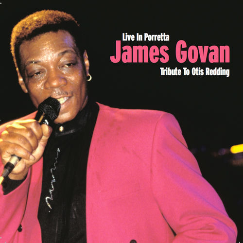

James Govan
James Govan was an American blues soul singer. His most recent album, I'm in Need, was released in 1996. He had also performed alongside such artists as The Boogie Blues Band and Charlie Wood. Govan had become one of the favorite musicians on Beale Street, known for his cavernous baritone voice. He routinely performed for over two decades at the Rum Boogie Café.
Complete Discography & Tracklists (3)